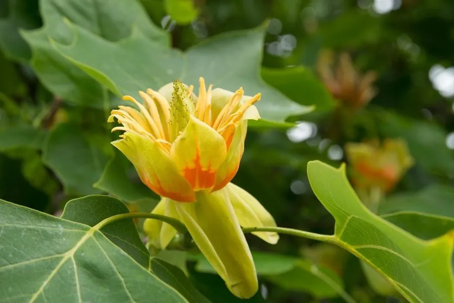

乔木 · 植物界
北美鹅掌楸 Liriodendron tulipifera

原产北美的落叶大乔木，叶片形似鹅掌、花似郁金香，生长迅速，是北美重要的用材与观赏树种。
- 分类
- 门被子植物门纲木兰纲目木兰目科木兰科属鹅掌楸属
- 栖息环境
- 海拔 1000 米以下的平原与山地，喜光喜温暖湿润
- 地理分布
- 原产北美洲东部，中国长江流域及以北地区引种栽培
- 保护级别
- 暂无评估；中国未列入国家重点保护野生植物名录
物种志
北美鹅掌楸为落叶大乔木，高可达 50 m，树干通直，树皮灰褐色、纵裂；叶片形似鹅掌，先端平截，两侧各具 1–2 个裂片。花期 5–6 月，花单生于枝顶，花冠杯状，花被片 6 枚、黄绿色并带橙色斑纹，形似郁金香；聚合翅果纺锤形，成熟时散出带翅种子。
北美鹅掌楸原产北美洲东部，中国长江流域及以北地区引种栽培，喜光、喜温暖湿润，适宜深厚肥沃、排水良好的土壤，生长迅速。木材轻软、易加工，是北美重要的用材树种，可供建筑、家具与造纸用；树形高大、花似郁金香，是优良的观赏与行道树种。北美鹅掌楸与中国的鹅掌楸同属，但北美鹅掌楸花被片带橙色斑纹、生长更快，二者常被引种对比栽培。
形态与习性
- 株高可达 50 m，树干通直
- 花期5–6 月，花似郁金香
- 果期9–10 月，聚合翅果
- 光照喜光，不耐长期荫蔽
- 水分喜湿润，怕积水
- 主要用途建筑与家具用材、园林观赏、行道树
趣味知识
- 北美鹅掌楸的花像郁金香，因此被称为“郁金香树”。
- 北美鹅掌楸生长迅速，是北美重要的用材树种。
- 北美鹅掌楸与中国的鹅掌楸同属，但花被片带橙色斑纹、生长更快。